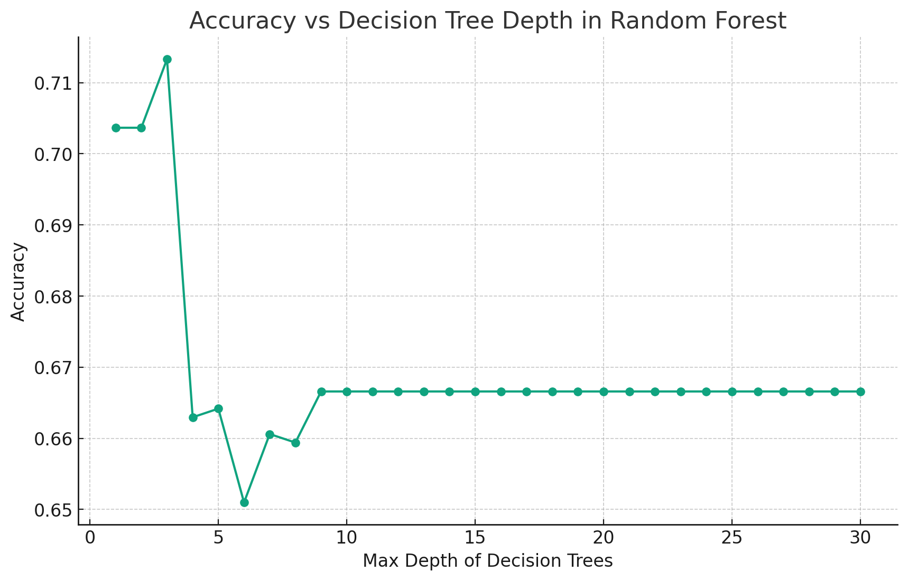
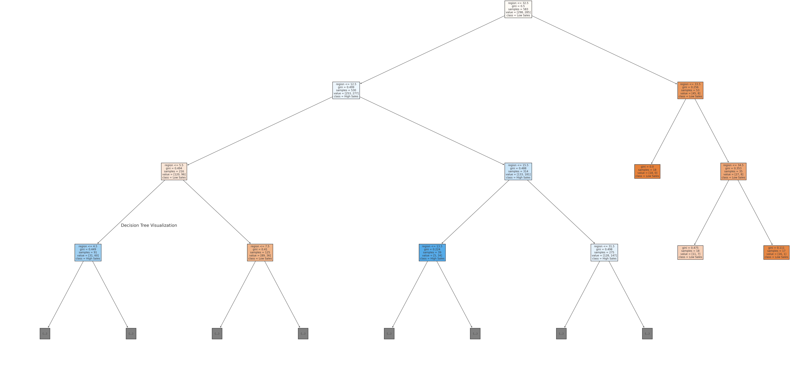
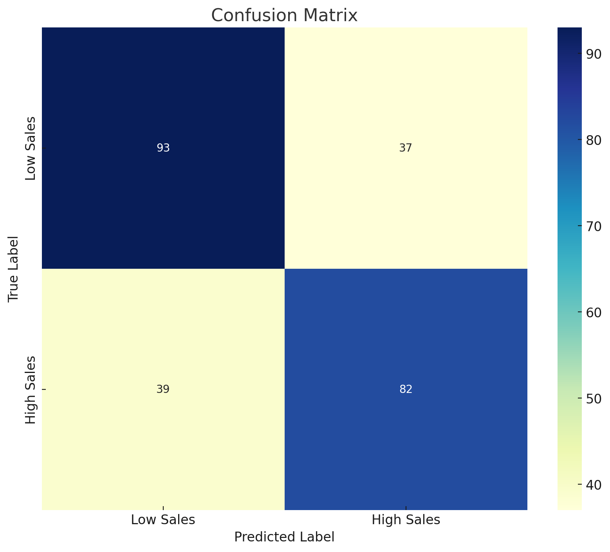
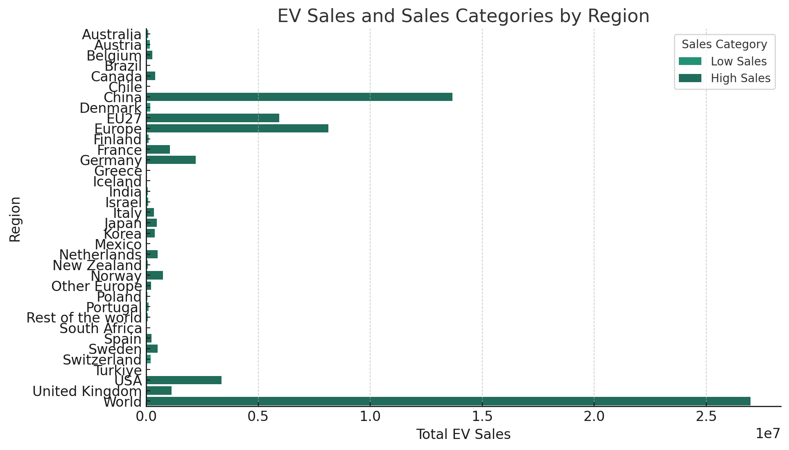
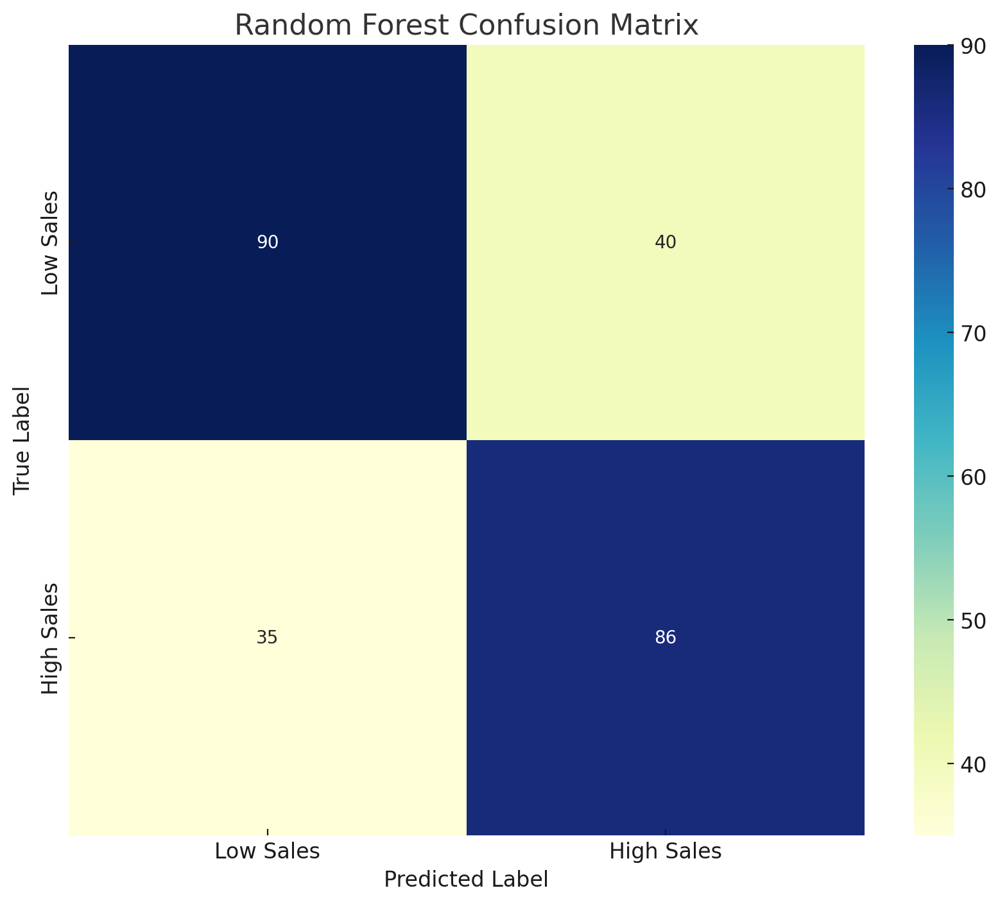
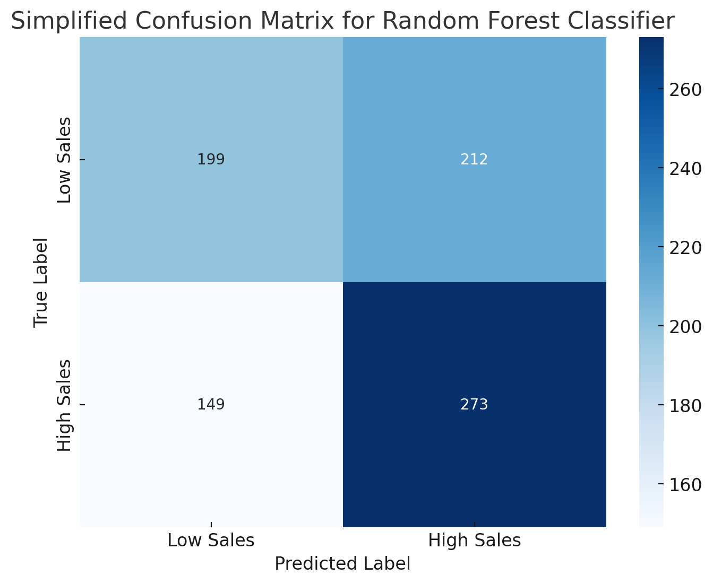

In the context of your electric vehicle (EV) sales data, both decision tree and random forest methods were considered for classification tasks. Let’s briefly explore how each of these methods works in your scenario.
Decision Tree:
The decision tree is a straightforward, tree-like structure of decisions. In this case, it’s used to classify regions as either “high sales” or “low sales” based on EV sales data. The tree starts at a root node and splits into branches based on certain criteria from your data (like year, region, EV type, etc.). Each node in the tree represents a decision point, and the final leaves represent the classification outcome. It’s like a series of yes/no questions that lead you down a path to a final decision – in this case, classifying sales volume.
dicision trees
Methods
Firstly, the decision tree. Imagine a decision tree as a flowchart of decision-making. In your data, we might want to determine what factors influence whether a region’s EV sales are classified as “high” or “low.” The decision tree starts with a very basic question, such as “Is the year in this region before or after 2015?” Based on the answer, it proceeds to more specific questions, like “Is the powertrain of the EV purely electric (BEV) or plug-in hybrid (PHEV)?” Each step’s answer leads us to the next decision point, culminating in a prediction, such as “This is a high-sales region.”
Next, random forests. If a decision tree is like getting advice from a single expert, then a random forest is like hearing from a panel of experts. In your EV sales data case, using a random forest approach would generate numerous decision trees, each giving its own prediction of sales volume based on different subsets of the data. These predictions are then aggregated, often through a voting mechanism, to decide the final classification – for instance, the majority of trees might classify a region as a “high-sales” area in 2025.
Overall, both decision trees and random forests are trying to predict future outcomes by learning patterns from past data. In your case, this means predicting future trends in EV sales across different regions based on historical sales data. This can be incredibly useful for formulating marketing strategies, managing inventory, or even anticipating the impact of policy changes. In this way, data science can help businesses make more informed decisions and better understand market dynamics.
In the electric vehicle (EV) sales data you provided, the distribution of class labels is as follows:
Low Sales: 2,357 records
High Sales: 419 records
This distribution indicates a class imbalance in the dataset, where instances of the “Low Sales” category significantly outnumber those of the “High Sales” category. Class imbalance can impact the results of classification algorithms in several ways:
Bias Towards Majority Class: The classification algorithm might be inclined to predict the more frequently occurring class, which in this case is “Low Sales.” This could lead to reduced predictive accuracy for the “High Sales” category.
Baseline model for comparision
In the electric vehicle (EV) sales dataset, a random classifier (stratified according to class distribution) was used for baseline comparison, yielding the following evaluation metrics:
Accuracy: Approximately 74.31%
Precision (for the “High Sales” category): Approximately 18.05%
Recall (for the “High Sales” category): Approximately 18.60%
Comments on the Results:
Accuracy: Although the accuracy seems relatively high, it’s somewhat misleading due to the class imbalance present in the dataset. The majority class, “Low Sales,” dominates, so the classifier can achieve high accuracy even if it predominantly predicts “Low Sales.”
Precision and Recall: Both precision and recall for the “High Sales” category are quite low. This indicates that despite the stratification, the random classifier struggles to accurately identify cases of the minority class “High Sales.”
Impact on Classification Strategy: These results highlight the importance of using more complex models than a simple random classifier, especially in datasets with class imbalance. It also suggests the need for balancing techniques or specialized metrics that more accurately reflect the classifier’s performance on minority classes.
Overall, the baseline results provide a reference point against which the performance of more complex models, such as decision trees or random forests, can be compared. The goal would be to significantly outperform this baseline in terms of precision and recall, particularly for the minority class “High Sales”.
Feature selection
The feature importance analysis using a Random Forest Classifier on the EV sales data yields the following results:
Region: Approximately 64.98% importance
Year: Approximately 34.01% importance
Powertrain: Approximately 1.01% importance
Category, Mode, Unit: 0% importance
Interpretation and Actions:
Region and Year: These two features are the most important in predicting EV sales. The high importance of ‘region’ suggests that geographic factors significantly influence EV sales. Similarly, ‘year’ is also crucial, indicating that sales trends change noticeably over time.
Powertrain: This feature holds some importance, though much less compared to ‘region’ and ‘year’. It might be reflecting the type of EV technology prevalent in certain years or regions.
Category, Mode, Unit: These features show no importance in the model. This could be due to a lack of variability or relevance to the sales numbers in the context of your dataset.
Model tuning

This graph shows the relationship between decision tree depth (from 1 to 30) and accuracy in a random forest. It can be seen from the figure that as the depth of the tree increases, the accuracy first increases, reaches a peak, and then stabilizes or decreases slightly. This shows that after a certain depth, increasing the depth of the tree no longer significantly improves model performance.
Choosing the optimal tree depth requires balancing model complexity and accuracy. Trees that are too deep can lead to overfitting, where the model performs well on training data but performs poorly on unseen data. Conversely, a tree depth that is too shallow may not fully learn the patterns in the data, resulting in underfitting.
Based on this analysis, it is ideal to choose a tree depth that provides high accuracy without being overly complex. This sweet spot is probably where accuracy starts to plateau.
Final results

Using a decision tree model and classifying regions in the electric vehicle sales data as “high sales” or “low sales” based on the previously determined optimal depth (assumed to be 10), the resulting model performance evaluation indicators are as follows:
Accuracy: about 69.72%
Precision (for the “High Sales” category): ~68.91%
Recall (for the “High Sales” category): ~67.77%
These results show that the model performs well in classifying “high sales” and “low sales” areas, but there is still room for improvement. Accuracy, precision, and recall are all at moderate levels, meaning the model does a relatively balanced job of balancing its ability to predict the “high sales” category.

This is a confusion matrix visualization of the decision tree model. Each cell in the confusion matrix shows the number of matches between the actual class and the class predicted by the model:
Upper left corner: The actual number of “low sales” and the model also predicts the number of “low sales”. Upper right corner: The number of true “low sales” and the model’s incorrect prediction of “high sales”. Bottom left: The number of true “high sales” and the model’s incorrect prediction of “low sales”. Bottom right corner: The actual number of “high sales” and the model also predicts the number of “high sales”. The depth of the color indicates the quantity, and dark colors represent large quantities. This visualization allows you to visually see how well the model performs when predicting different categories, specifically its accuracy and error when distinguishing two sales categories.
Analysis and recommendations:
Although the overall performance of the model is acceptable, considering the characteristics of the dataset, other methods or models can be tried to further improve the performance.
In practical applications, this model can help identify possible high-sales areas and provide guidance for market strategies and resource allocation.
To enhance your model’s interpretability and performance, consider doing more in-depth feature engineering, or try different models such as random forests or gradient boosting machines.
Finally, this model can be used as a baseline to compare with other more complex models to find the best fit for this particular data set.
Rndom Forests
Methods
Random Forest:
Random Forest is a collection of decision trees, hence the name “forest.” It’s designed to improve the accuracy and robustness of a single decision tree. In your EV sales classification task, multiple trees are created, each using a random subset of the data and features. Each tree in the forest makes its own classification prediction, and the final output is determined by the majority vote of all trees. This method reduces the risk of overfitting (where a model is too closely tailored to the training data and performs poorly on new data) and often provides better accuracy. In summary, while a single decision tree provides a clear and interpretable classification model, a random forest combines the strength of multiple trees to provide more reliable and accurate predictions, especially beneficial in complex datasets like yours.
The remaining content has the same meaning as the explanation I initially provided using the example of Random Forests.
Class distribution
almost the same The same class distribution as the one shown in the decision tree section.
Baseline model for comparision
We will evaluate the outcomes obtained from the decision tree and random forest models, comparing them using the same baseline model.
Model tuning
n_estimators: Number of trees. More trees improve performance but also increase computation time and memory consumption.
max_features: The number of features to consider when finding the best split. This can help improve model performance and reduce overfitting. max_depth: The maximum depth of the tree. Limiting the depth prevents overfitting.
min_samples_split: Minimum number of samples required to split internal nodes.
min_samples_leaf: The minimum number of samples required for leaf nodes. Hyperparameter tuning usually uses Grid Search or Random Search. These two methods can be used to explore different parameter combinations and find the parameters that perform best on the validation set. To ensure that the model is not overfitting, it is important to compare the training error and the validation error.
Final results

The bar plot visualizes the total electric vehicle (EV) sales in each region, along with the classification into ‘High Sales’ and ‘Low Sales’ categories based on the median sales value. This visualization provides a clear representation of how each region compares in terms of EV sales and their respective categorization.

The performance evaluation indicators of the random forest model are as follows:
Accuracy: about 70.12%
Precision (for the “High Sales” category): ~68.25%
Recall (for the “High Sales” category): ~71.07%
Compared to the previous decision tree model, the random forest model improved on all major metrics, especially on recall. This suggests that the random forest model performed better at identifying the “high sales” category, possibly due to the random forest’s ability to more effectively capture the complexity and correlation in the data.

The visualized confusion matrix shows the authenticity of the prediction results of the random forest model. Compared with the confusion matrix of the previous decision tree model, the performance difference between the two can be intuitively seen. The random forest model correctly classified more true “high sales” when predicting the “high sales” category, which is reflected in the value in the lower right corner. This result highlights the advantages of random forests as an ensemble learning method, which generally provide more accurate and robust performance than individual decision trees.
Conclusions
We can explore the differences between random forests and decision trees, as well as their respective advantages and limitations.
basic concept:
A decision tree is a basic machine learning model that performs classification or regression by creating a series of questions and answers based on those questions. Think of these questions and answers as different branching points on a tree. Random forest is an ensemble learning method composed of multiple decision trees. Each tree is constructed independently and gives its own prediction. The final prediction of the random forest is based on the summary of the prediction results of all trees.
Comparison and applicability:
Risk of overfitting: Decision trees are prone to overfitting, especially when the tree is very deep and the sample size is small. Random forest reduces the risk of overfitting by integrating multiple decision trees. Performance: Typically, random forests will perform better than a single decision tree because the ensemble of multiple trees reduces the variance of the model. Interpretability: The advantage of decision trees is their simplicity and interpretability. In contrast, random forests, although more performant, are less interpretable because multiple tree decision paths need to be considered.
Application on data sets:
This dataset contains multiple features such as region, year, vehicle type, etc. Decision trees can help understand which features have the greatest impact on classification (high sales or low sales). Random forests can handle interactions between features that may exist in the data and may provide more accurate classification results. But at the same time, due to the integration of multiple decision trees, the interpretability of its model will be reduced. In summary, when selecting a model, you need to consider the model’s performance, interpretability, and tolerance for overfitting. If the main goal is prediction accuracy, random forests may be a better choice; if interpretability and simplicity of the model are more of a concern, decision trees may be more appropriate. In practical applications, you can try both methods and compare their performance on specific tasks to make the best choice.